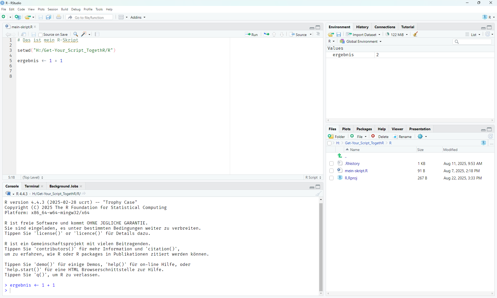

1 + 1Rste Schritte
Für die Aufbereitung und Analyse deiner Daten empfehlen wir R – eine Programmiersprache die in der Wissenschaft weit verbreitet ist. Um den Umgang mit R zu vereinfachen, nutzen wir RStudio. Dabei handelt es sich um eine integrierte Entwicklungsumgebung (IDE), also sozusagen ein All-in-one-Programm für alle, die mit R arbeiten: Du kannst hier Code schreiben, ausführen, deine Daten anschauen und direkt schöne Plots erzeugen – ohne ständig zwischen Programmen zu wechseln.
Installation
Installiere zuerst R, dann RStudio auf deinem Computer. Die Dateien kannst du kostenlos hier herunterladen.
RStudio Interface

Standardmäßig ist RStudio in vier Bereiche (auch “Panes”) aufgeteilt:
- Source (oben links)
- Hier schreibst und bearbeitest du deine Skripte oder Quarto-/RMarkdown-Dokumente. Du kannst deinen Code hier speichern und später erneut ausführen.
- Console (unten links)
- In diesem Bereich wird der Code tatsächlich ausgeführt. Du kannst hier auch direkt Befehle eingeben und die Ergebnisse sofort sehen.
- Environment / History (oben rechts)
- Environment zeigt dir alle Objekte (z. B. Daten, Funktionen, Variablen), die aktuell im Arbeitsspeicher liegen.
- History listet alle bisherigen Befehle auf, die du ausgeführt hast.
- Files / Plots / Packages / Help / Viewer (unten rechts)
- Dieser Bereich enthält mehrere Reiter:
- Files: zeigt Dateien und Ordner im aktuellen Projektordner.
- Plots: zeigt Grafiken, die du mit R erzeugst.
- Packages: zeigt installierte R-Pakete an und ermöglicht deren Verwaltung.
- Help: zeigt Hilfeseiten zu Funktionen und Paketen.
- Viewer: zeigt z. B. interaktive HTML-Outputs aus Quarto an.
- Dieser Bereich enthält mehrere Reiter:
Du kannst die Anordnung der Fenster bei Bedarf unter Tools > Global Options > Pane Layout anpassen.
Designoptionen
Standardmäßig ist das Theme von RStudio hell. Wenn dir das zu langweilig ist, kannst du das Programm ganz einfach an deinen Geschmack anpassen: Unter Tools > Global Options > Appearance hast du die Möglichkeit, ein anderes Farbschema oder eine neue Schriftart auszuwählen.
Für besonders ansprechende Symbole – etwa den Zuweisungspfeil “<-” – empfiehlt sich die Schriftart Fira Code. Sie sorgt für eine übersichtlichere Darstellung und unterstützt sogenannte Ligaturen. Dafür ist eine vorherige Installation notwendig.
Skripte und Befehle
Code kannst du zwar auch direkt in der Konsole schreiben und ausführen, allerdings wird dieser dort nicht nach der Sitzung erhalten. Um dein Vorgehen für dich und andere replizierbar zu machen, empfiehlt es sich mit Skripten zu arbeiten. Bei einem Skript handelt es sich um eine Datei, in der du Code schreiben und diesen direkt ausführen kannst. Um ein neues Skript zu erstellen, wähle im Menü File > New File > R Script oder klicke alternativ auf das Blatt mit dem Plussymbol links oben und wähle dort “R Script” aus.
Das leere Skript kannst du jetzt mit deinem Code füllen. Probier es doch gleich mal aus und schreibe eine einfache Rechnung in dein Skript:
Den Code kannst du jetzt direkt ausführen, indem du in die zugehörige Zeile klickst und Strg+EnterStrg+Enter drückst. Der ausgeführte Code und das Ergebnis erscheinen dann unten in der Konsole. Du kannst auch mehrere Befehle ausführen, indem du die Codezeilen markierst und dann Strg + Enter drückst. Du hast außerdem die Möglichkeit, oben rechts im Source-Pane mit einem Mausklick den markierten Code auszuführen.
Pro Tipp: STRg+Shift+Enter für das gesamte Skript